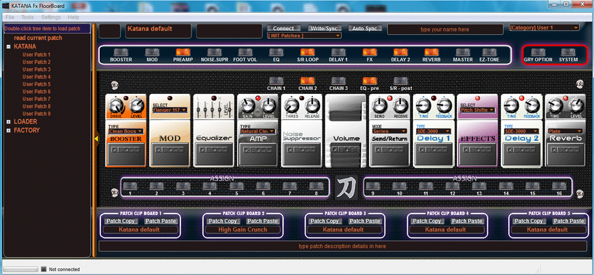

Katana FxFloorBoard Help
Katana FxFloorBoard (Firmware 3) is a midi patch editor software made to assist with getting the most from your Katana modelling amplifier.
This software provides a graphical layout of your Katana’s internal settings and virtual pedal board, and allows you to access settings not available from the front panel. FxFloorBoard also provides access to “hidden” extra features not available from the ‘official’ Boss editor.
The extra features include 21 extra (“sneaky”) preamps and 5 custom preamps parameters, extra effects hidden in MOD, FX, and Delay 1 & 2, and Custom Booster drives.
This editor software also allows use of more effects blocks, where the Katana allows a choice of either “Booster or MOD”, “Delay 1 or FX”, and “Delay 2 or Reverb”. You now use all of these at one time, switching them independently.
The signal chain typically has limited choice of arrangement, but with FxFloorBoard, the effects in the signal chain can be placed in any preferred order.
Since the Katana is a subset of the Boss GT series of Multi-effects, patch files can be Opened from the file menu and translated for the Katana, these include patches for the GT-100, GT-001, GT-10, GT10B, GT-8, GT-6B, and the ME-80. Patches can be in *.tsl (Tone Studio Library), *.syx, or *.mid file formats. Patches (a snapshot of a channels settings) can also be saved in *.tsl format to use with Tone Studio, and exported in native *.syx format too.
Katana FxFloorBoard also has a
feature called “Patch Loader”, which allows your computer/tablet/laptop to be
used, along with a Midi Foot Controller, as a 128 channel extension to your
Katana. Giving you 128 instant access channels recalled from you midi
controller. The extra channels make use of 16 “Assigns” functions, giving
programmable control over any of the Katana parameters.
Patch Loader can be enabled as an
option in the Preferences menu, as this function is ‘hidden’ by default.
First time use
Before using Katana FxFloorBoard, a
USB driver may be required (depending on your operating system) to be
downloaded and installed, the Katana USB driver can be downloaded from the Boss
website, and installed as recommended by the manufactures instruction.
The Katana itself requires to have
firmware version 3 to work with this version 3 of FxFloorBoard.
Once the driver is installed (if
required), plug in the Katana USB port to your computer, then start FxFloorBoard editor software.
The Katana midi/USB port will be
required to be selected in the FxFloorBoard, by
opening from the editor menu “Preferences”, and select “Katana” if using the
Katana USB port directly, or other Midi device if an alternative USB/Midi
connection is used to the Katana. Select O.K. to accept the device, this will
now be saved to a preferences file and the editor software will restart with
the applied settings.
A note on the “Controller Midi In”
setting, this is for remote midi control of the Katana and itself should not be
set to Katana, as this will cause communication problems, if used, it should be
set to your midi controller foot pedal device.
When the software restarts the “Connect”
button will flash green, and if the connection is successful, will remain lit
green. The editor main screen will now be populated with the current Katana amp
settings, and the left-side panel “Patch-Tree” will populate the channel names.

The Main Screen Layout
After the midi connection has been
established and the editor is “Connected”, the editor is ready to use.
The left panel contains the “Patch
Tree” list of Katana channels, and Patch Loader channels. A “single mouse
click” on a Katana Channel will change the Amp’s channel to that selected
option, and as you play your guitar, the sound of that selected channel will be
heard.
To load a Katana channel into the
editor, in the left panel “Patch Tree” a mouse “double click” will select that
channel and request the Katana to send the channel data into the editor, which
the settings will then be displayed.
To save a patch into the Katana channel,
once you have a patch loaded on screen or settings parameters adjusted to your
taste, select the destination channel by a “single mouse click”
on the left panel Patch Tree, then press the “Write” button to the centre top
screen, a popup dialog will confirm your actions.
To save a patch into the Katana which
has a customised chain order, it will be necessary to save using the channel
button (press and hold) method on the Katana panel as this is a firmware
limitation in the Katana.
The editor interface also has
provision to change the Patch name, in the upper left dialog box, simply click
onto the name and a text dialog will open to allow changing the name, the name
data is saved into the Katana or patch file when saved.
User text dialog can be changed or
added in the upper right and lower screen, also by a mouse click on the text
will open a text edit dialog allowing the text descriptions of your patch to be
entered. This data is also saved into the Katana or patch file when saved.